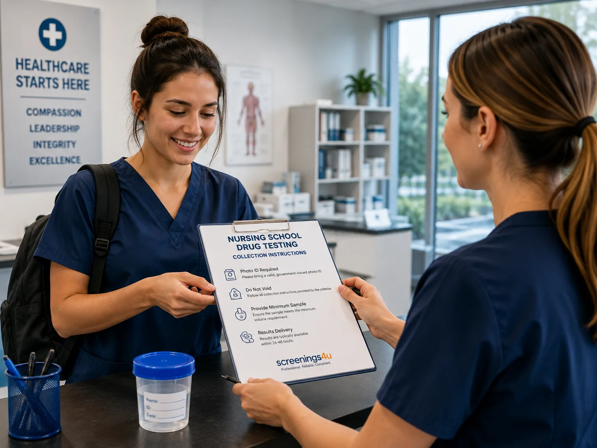

Foundation Screen
Core nursing-student screening for common controlled substances.
Choose the panel your nursing program requires, complete testing through a certified collection location, and receive secure digital results.

Nursing admissions testing supportscreenings4u streamlines nursing-school drug testing so students can focus on their clinical training instead of the testing process.
Core nursing-student screening for common controlled substances.
Broader testing for clinical placement requirements.
Expanded coverage for advanced panel requirements.
Custom panel configurations for program-specific requirements.
Standardized panels are designed for nursing schools and clinical placement requirements.
Screens for Marijuana, Cocaine, Opiates, Phencyclidine and Amphetamines with lab-certified results.
Adds Barbiturates, Benzodiazepines, Methadone, Methaqualone and Propoxyphene for broader requirements.
Expanded coverage for healthcare screening and more advanced panel monitoring.
Custom panel configurations are available when your school has a specific requirement.
From scheduling to secure results, the process is designed to keep your clinical compliance moving.
Choose your required panel and select a convenient certified collection site from the nationwide network.
Present your digital donor pass at the facility and complete the collection confidentially.
Verified results are sent securely for your nursing school compliance requirement.
Having the required identification and testing information ready can help your appointment go smoothly.
Maintain normal hydration without excessive water intake before a urine test, and follow the collection site's instructions.
Choose the panel that matches your school's clinical compliance requirement.
5 Panel Urine Drug Test, nationwide lab access, secure digital pass via email, and results in 2 to 3 days.
Order Now →10 Panel Urine Drug Test, nationwide lab access, secure digital pass via email, and results in 2 to 3 days.
Order Now →12 Panel Urine Drug Test, nationwide lab access, secure digital pass via email, and results in 2 to 3 days.
Order Now →